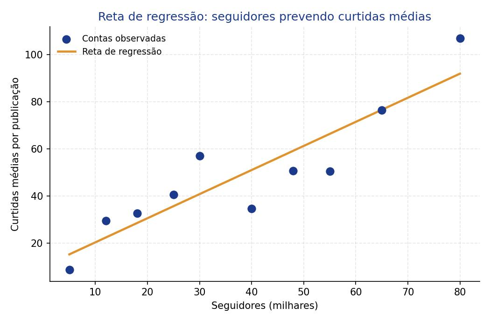
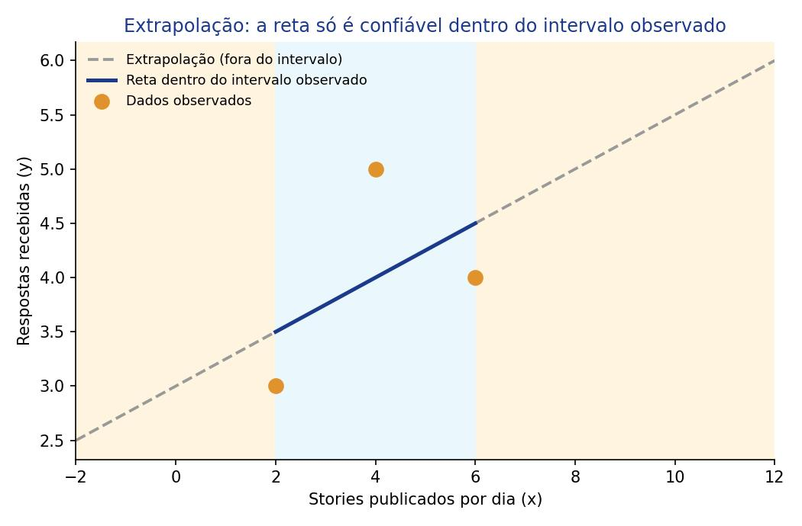

Como prever um valor a partir de outro?
Na Aula 7 aprendemos a medir a força de uma relação entre duas variáveis com a correlação. Agora damos o próximo passo: quando essa relação é forte o bastante, podemos traçar uma reta que resume o padrão dos dados e usá-la para prever o valor de uma variável a partir da outra. É a ideia central da regressão linear, fechando o ciclo que começamos com o diagrama de dispersão.
Objetivos de Aprendizagem
Ao término desta aula, vocês serão capazes de:
- Reconhecer quando é adequado ajustar uma reta de regressão a um conjunto de dados;
- Identificar a variável explicativa (X) e a variável resposta (Y) em um problema de previsão;
- Calcular a inclinação e o intercepto da reta de regressão a partir das "cinco grandes" estatísticas;
- Interpretar a inclinação e o intercepto de uma reta de regressão;
- Fazer previsões usando a reta de regressão e reconhecer os riscos da extrapolação.
Seções de Estudo
- SEÇÃO 1 A reta de regressão: prevendo Y a partir de X
- SEÇÃO 2 Calculando a inclinação e o intercepto
- SEÇÃO 3 Fazendo previsões e evitando armadilhas
A reta de regressão: prevendo Y a partir de X
Quando duas variáveis numéricas têm uma correlação pelo menos moderada (|r| ≥ 0,50) e o diagrama de dispersão mostra um padrão linear, podemos traçar a reta de regressão: a reta que melhor se ajusta aos pontos e que serve para prever o valor médio de uma variável a partir da outra.
A variável usada para prever é chamada de variável explicativa (X); a variável que se quer prever é a variável resposta (Y). Diferente da correlação, em que X e Y podem trocar de lugar livremente, na regressão essa escolha importa: X é sempre o que você já sabe, Y é sempre o que você quer descobrir.

| Condição | O que verificar |
|---|---|
| Padrão linear | O diagrama de dispersão lembra uma reta, não uma curva |
| Correlação suficiente | |r| é pelo menos 0,50 (moderada a forte) |
Calculando a inclinação e o intercepto
Para encontrar a reta de regressão, primeiro reunimos as "cinco grandes" estatísticas: a média de x (x̄), a média de y (ȳ), o desvio-padrão de x (sx), o desvio-padrão de y (sy) e a correlação entre x e y (r). Com esses cinco números, calculamos a inclinação (m) e o intercepto (b) da reta.
A inclinação mostra o quanto y muda, em média, para cada unidade que x aumenta. O intercepto é o valor previsto de y quando x é igual a zero, o ponto onde a reta cruza o eixo vertical.
| Estatística | Valor |
|---|---|
| x̄ (média de x) | 4 |
| ȳ (média de y) | 4 |
| sx (desvio-padrão de x) | 2 |
| sy (desvio-padrão de y) | 1 |
| r (correlação) | 0,50 |
Fazendo previsões e evitando armadilhas
Com a reta y = m·x + b em mãos, prever y para um novo valor de x é simples: basta substituir x na equação e calcular. O resultado é uma previsão para o valor médio de y, não uma certeza absoluta.
O maior cuidado é a extrapolação: usar a reta para prever y com valores de x fora do intervalo que foi realmente observado nos dados. Fora desse intervalo, não há garantia de que o padrão linear continue valendo.

| Armadilha | Por que evitar |
|---|---|
| Extrapolação | Prever y para x fora do intervalo observado nos dados |
| Intercepto sem sentido | Nem sempre x = 0 é uma situação real ou observada |
| Outliers | Pontos distantes da reta podem distorcer a previsão |
Exemplo Matemático Resolvido
Usando as "cinco grandes" estatísticas dos stories publicados (x) e respostas recebidas (y) da Aula 7 (x̄ = 4, ȳ = 4, sx = 2, sy = 1, r = 0,50), encontre a reta de regressão e preveja quantas respostas são esperadas em um dia com 5 stories publicados.
- Dados: x̄ = 4; ȳ = 4; sx = 2; sy = 1; r = 0,50
- Fórmula: m = r · sysx; b = ȳ − m · x̄
- Substituição: m = 0,50 · 12; depois b = 4 − m · 4
- Cálculo: m = 0,25; b = 4 − (0,25 × 4) = 4 − 1 = 3; reta: y = 0,25x + 3
- Interpretação: a cada story a mais publicado por dia, espera-se, em média, 0,25 resposta a mais. Para um dia com 5 stories, a reta prevê y = 0,25 × 5 + 3 = 4,25 respostas. O intercepto (3) seria a previsão para 0 stories, mas x = 0 está fora do intervalo observado (2 a 6 stories), então essa previsão específica não é confiável.
Exemplo em Python
O módulo statistics também tem a função
linear_regression, que calcula diretamente a
inclinação e o intercepto da reta de regressão. O programa abaixo
repete o cálculo do exemplo resolvido e faz a previsão para 5
stories.
import statistics
stories = [2, 4, 6]
respostas = [3, 5, 4]
reta = statistics.linear_regression(stories, respostas)
print(f"Inclinação (m): {reta.slope}")
print(f"Intercepto (b): {reta.intercept}")
previsao = reta.slope * 5 + reta.intercept
print(f"Previsão para 5 stories: {previsao} respostas")
Entrada: listas com o número de stories e de respostas em 3 dias.
Processamento: statistics.linear_regression
calcula m e b diretamente a partir dos pares (x, y); em seguida,
a equação da reta é usada para prever y quando x = 5.
Saída: "Inclinação (m): 0.25", "Intercepto (b): 3.0" e "Previsão para 5 stories: 4.25 respostas".
Interpretação: o resultado confirma o cálculo manual, incluindo a previsão de 4,25 respostas para um dia com 5 stories, um valor dentro do intervalo observado nos dados.
Exercícios
statistics.linear_regression, que calcule a
inclinação e o intercepto da reta de regressão e preveja quantas
notificações são esperadas para 4,5 horas de uso.
Gabarito Comentado
Exercício 1
import statistics
horas = [2, 3, 4, 5, 6]
notificacoes = [10, 12, 15, 14, 20]
reta = statistics.linear_regression(horas, notificacoes)
previsao = reta.slope * 4.5 + reta.intercept
print(f"m: {reta.slope:.2f} | b: {reta.intercept:.2f}")
print(f"Previsão para 4,5 horas: {previsao:.2f} notificações")
Saída: "m: 2.20 | b: 5.40" e "Previsão para 4,5 horas: 15.30 notificações".
Comentário: a cada hora extra de uso, o modelo prevê, em média, 2,2 notificações a mais. Como 4,5 horas está dentro do intervalo observado (2 a 6 horas), a previsão de 15,3 notificações é confiável.
Exercício 2
import statistics
velocidade = [10, 20, 30, 50, 80]
tempo_carregamento = [25, 18, 14, 9, 5]
reta = statistics.linear_regression(velocidade, tempo_carregamento)
previsao = reta.slope * 40 + reta.intercept
print(f"m: {reta.slope:.4f} | b: {reta.intercept:.4f}")
print(f"Previsão para 40 Mbps: {previsao:.2f} segundos")
if min(velocidade) <= 40 <= max(velocidade):
print("40 Mbps está dentro do intervalo observado")
else:
print("40 Mbps está fora do intervalo observado (extrapolação)")
Saída: "m: -0.2656 | b: 24.2922", "Previsão para 40 Mbps: 13.67 segundos" e "40 Mbps está dentro do intervalo observado".
Comentário: a inclinação negativa confirma que velocidades maiores de Wi-Fi reduzem o tempo de carregamento. Como 40 Mbps fica entre 10 e 80 Mbps (o intervalo observado), a previsão de 13,67 segundos é confiável.
Retomando a Conversa Inicial
Seção 1, Reta de regressão: prevê a variável resposta (Y) a partir da variável explicativa (X), desde que o padrão seja linear e a correlação seja pelo menos moderada.
Seção 2, Inclinação e intercepto: calculados a partir das "cinco grandes" estatísticas (x̄, ȳ, sx, sy, r), com m = r · sysx e b = ȳ − m · x̄.
Seção 3, Previsões: basta substituir x na equação da reta, mas a previsão só é confiável dentro do intervalo de x observado nos dados; fora dele, é extrapolação.
Revisão Rápida
| Conceito | Fórmula | Erro comum | Dica de prova | Aplicação em Tecnologia |
|---|---|---|---|---|
| Reta de regressão | y = m·x + b | Usar sem checar padrão linear e |r| ≥ 0,50 | X prevê; Y é previsto | Seguidores prevendo curtidas médias |
| Inclinação (m) | sysx × r | Calcular b antes de m | Sinal de m = sinal de r | Stories publicados prevendo respostas |
| Intercepto (b) | ȳ − m · x̄ | Interpretar b quando x = 0 não é observado | Nem todo intercepto faz sentido | Previsão quando x está fora do uso comum |
| Extrapolação | N/A | Prever y para x fora do intervalo dos dados | Confira o intervalo de x antes de prever | Velocidade de Wi-Fi prevendo tempo de carregamento |
Sugestões de Leituras e Sites
LEITURAS
RUMSEY, Deborah J. Statistics For Dummies. 2. ed. Hoboken, NJ: Wiley Publishing, 2011. (livro-base desta aula, recomendado para aprofundamento em regressão linear.)
SITES
Khan Academy, Estatística e Probabilidade: https://pt.khanacademy.org/math/statistics-probability (aulas gratuitas em português sobre reta de regressão e previsões.)
Glossário
| Termo | Definição |
|---|---|
| Reta de regressão | Reta que melhor se ajusta a um conjunto de dados, usada para prever y a partir de x. |
| Variável explicativa (X) | Variável usada para fazer a previsão. |
| Variável resposta (Y) | Variável que se quer prever. |
| Inclinação (m) | Quanto y muda, em média, para cada unidade que x aumenta. |
| Intercepto (b) | Valor previsto de y quando x é igual a zero. |
| Extrapolação | Fazer previsões com valores de x fora do intervalo observado nos dados. |
Referências Bibliográficas
VIEIRA, Sonia. Estatística básica – 2ª edição revista e ampliada. 2. ed. Porto Alegre: +A Educação - Cengage Learning Brasil, 2018. E-book. p.Cover. ISBN 9788522128082. Disponível em: https://integrada.minhabiblioteca.com.br/reader/books/9788522128082/. Acesso em: 01 dez. 2025.
MORETTIN, Pedro A. Estatística básica. 10. ed. Rio de Janeiro: Saraiva Uni, 2023. E-book. p.i. ISBN 9788571441484. Disponível em: https://integrada.minhabiblioteca.com.br/reader/books/9788571441484/. Acesso em: 01 dez. 2025.